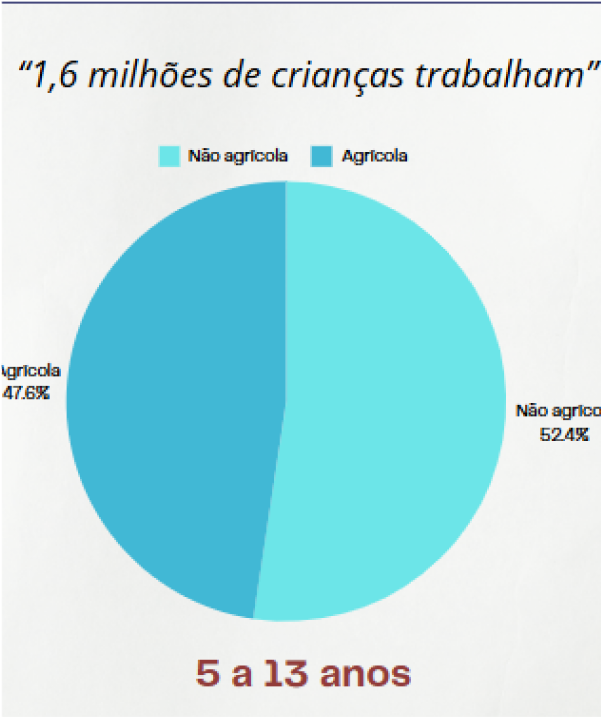
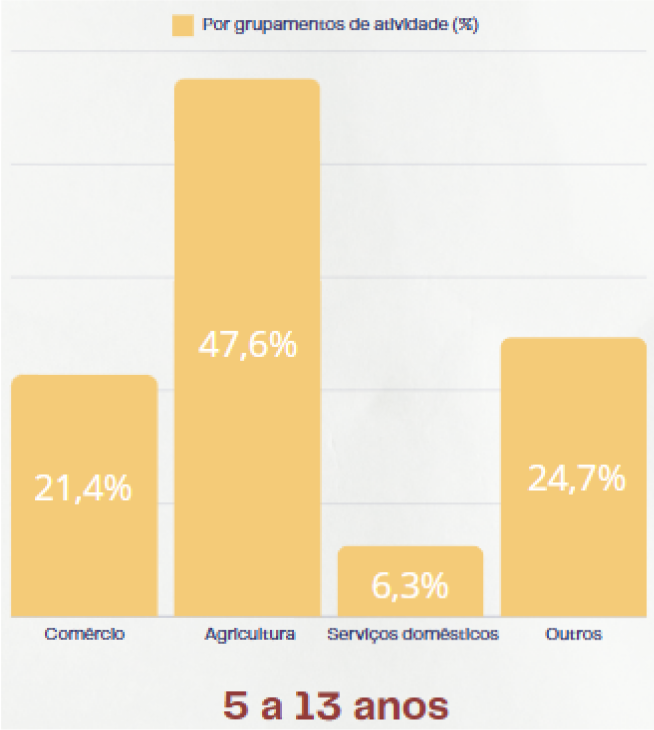

Child labor in Brazil is a problem that violates the rights of children and adolescents,
harming their development and access to education. Although the Constitution and the ECA prohibit work before
the
age of 16, many children are still exploited in hazardous activities. This affects their health and limits their
future opportunities, perpetuating cycles of poverty.
Minimum age: In Brazil, work is only allowed from the age of 16, except for activities such as
apprenticeship from the age of 14 (following specific rules).
Dangerous, unhealthy, or night work: Only allowed from the age of 18.
Examples of Child Labor
Rural work: Harvesting fruits, sugarcane, coffee, among others.
Domestic work: Caring for children, cleaning, cooking in third-party homes.
Informal urban work: Selling products on the streets, working as a parking attendant, or carrying goods.
Child sexual exploitation: One of the most severe forms of child labor.
Work in factories or illegal workshops: Subjecting children to dangerous conditions.
Research Data
-1.3 million children are in
a state of child labor.
-The majority are boys aged between 14
and 17 years old.
-The main causes are poverty,
culture, and misinformation.
-The biggest impacts are on health,
lack of education, and development.
How to Combat
Strengthening public policies:
Creation and implementation of government programs to prevent and eradicate child labor.
Quality education:
Ensure access to well-structured schools, with trained teachers and curricula that stimulate
child development.
Support for families:
Provide social assistance, income generation programs, and access to basic services to reduce
economic vulnerability.
Awareness campaigns:
Inform and sensitize society about the impacts of child labor and the importance of protecting
children's rights.
Infographic Data


Child labor in Brazil decreased
in 2023, compared to 2022, and
reached the lowest level in the historical
series.
Despite a significant increase
from 2016 to 2022, the rate dropped
again, being 4.9% in 2022 and 4.2% in
2023 (age group). The decline was
attributed to economic improvement and
the increase of Bolsa Família.
Children working as
slaves often do not know
they are in this situation, being
related to not studying and not
having access to the internet to
know they are not included in
Human Rights.
The Northeast and Southeast
regions record the highest
rates of occupation, respectively 33% and
28.8% of the 1.6 million boys and
girls working.